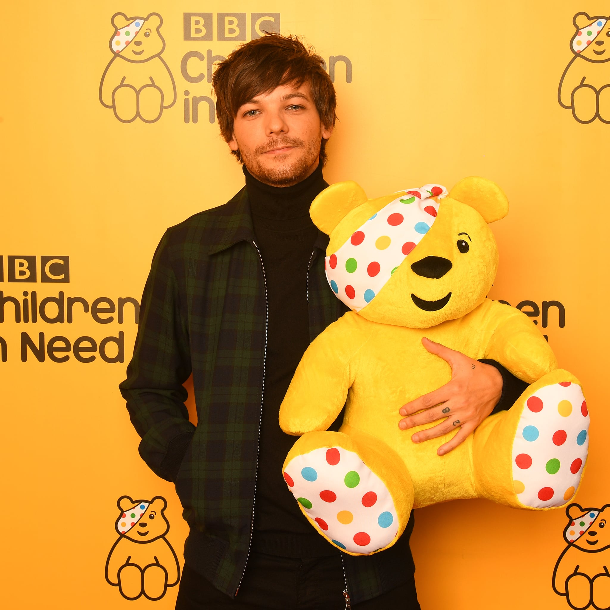

Louis Tomlinson
Faith in the Future
Louis William Tomlinson, a English singer/songwriter
Album
Louis Tomlinson’s debut solo album, Walls, came out January 31, 2020. It reached #1 on Worldwide iTunes Album Chart and reached #1 on iTunes Album Chart in 50 countries. It debuted at #4 on the UK Official Charts, #2 for UK Official Album sales, #8 on Rolling Stones Top Albums Chart, and #9 on the Billboard 200 charts.

Walls
“I think I always knew that I had to be confident and brave, to trust my gut a bit more because the kind of influences that i have now haven’t changed from what they were growing up.”
- Louis Tomlinson about finding out who he is as an artist.
Quotes
"I’m here to make music I love and make my fans proud to say they’re a fan."
"sometimes action is needed first to encourage the motivation and belief"
Philanthropy
Louis Tomlinson has always been involved in lots of charity works. He has been thoroughly involved with Bluebell Wood Children's Hospice and is one of their patrons.
In 12 December 2020, Louis held a online concert Live From London, which sold over 160,000 tickets, breaking records as the most livestreamed concert for a male solo artist of the year. The proceeds went to various charities such as FareShare, Crew Nation, Bluebell Wood Children's Hospice, Stagehand, as well as his touring crews.